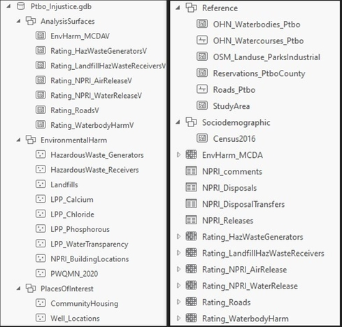
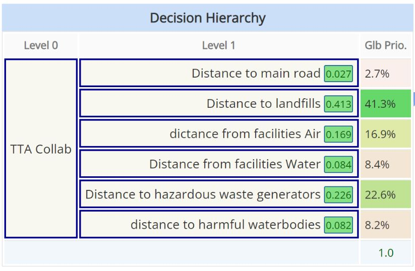
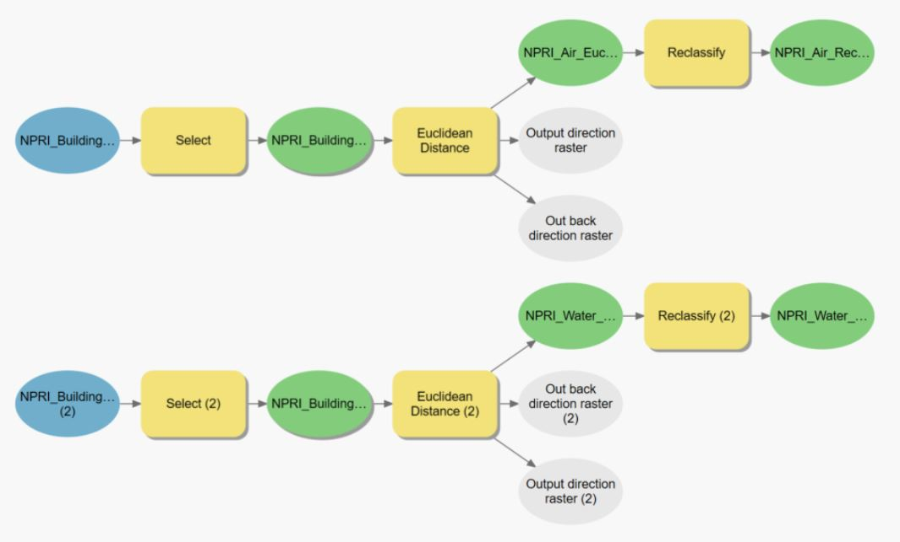
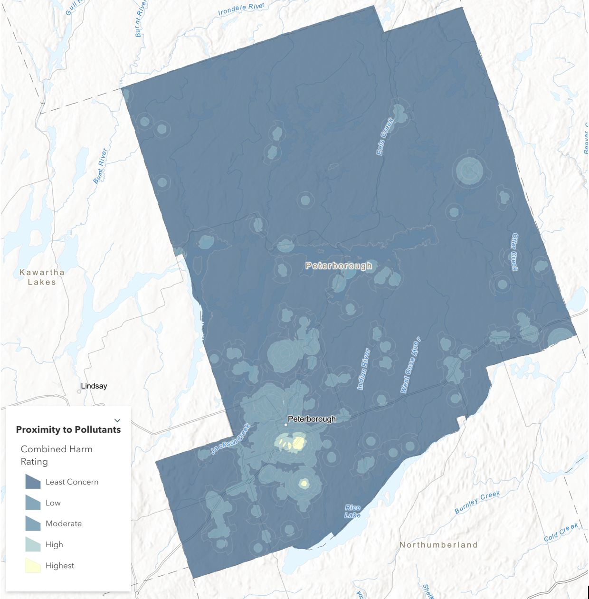
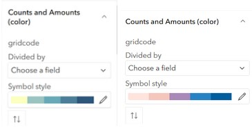

Hidden Hazards
The Story of Environmental Harm in Peterborough
Introduction
Industrial operations within Peterborough may impact racialized and low income communities at a disproportionately higher rate than other communities. Through a collaboration, this project is to explore this spatially.
The Clients
This project was a collaboration between the Community Race Relations Committee of Peterborough, GreenUP, Kawartha World Issues Centre, and academics at Trent University and the University of Toronto.
Project Abstract
Peterborough County, Ontario has had a significant amount of industrial operations within its borders, which may be impacting racialized and low income communities at a disproportionately higher rate than other communities. Community Race Relations Committee of Peterborough, GreenUp, Kawartha World Issues Center, Trent University, and University of Toronto have all teamed up with a desire to evaluate and map this environmental injustice in Peterborough. While our team found that there is a general lack of data on this subject available to the public, we were able to pull together relevant data that can be built upon in the future when more data becomes available that will allow for a deeper analysis regarding potential correlations between low income and/or racialized communities and environmental harm. Our team has aided the client’s goals by completing spatial analysis on the layers we were able to collect in order to evaluate potentially harmful zones and map these locations in an easy to use web application to be viewed by the community. The result of this effort is a descriptive Esri StoryMap, an Esri file geodatabase containing our processed data layers and analysis layers, and documentation for the ways we completed these tasks in order to aid in the future of the project. These layers include relevant environmental data processed and ready for future analysis, operational layers such as rated hazard surfaces and a Multi Criteria Decision Analysis rated surface, and useful models that can be followed to continue our work. This project is only the beginning of a much larger look into environmental injustice in the area, which our team looks forward to seeing grow in the future
Methodology
Data Preparation
Data was aquired from sources such as the Government of Ontario, the Government of Canada, Stats Canada, and Open Street Maps.
Layers were processed by projecting the data to the Web Mercator coordinate system (which is most useful for web-based mapping), and clipping the data to our study area of interest: Peterborough County, Ontario.
An Esri file geodatabase was created, including five different feature datasets in which to insert our processed files. This database, once filled, was uploaded to ArcGIS Online as a feature layer with which to create the maps for the StoryMap. Below is final version of our database, containing a total of 36 items.
Analysis
A proximity-based multicriteria decision analysis (MCDA) was performed in order to determine locations in Peterborough County at risk of exposure to sources of environmental harm. Taking into account the collected data, the MCDA parameters were chosen based on the following research done on the health effects of living in close proximity to sources of pollution along with a landfill site selection analysis.
- Residential proximity to industrial pollution sources and colorectal cancer risk: A multicase-control study (MCC-Spain)
- Mapping inequality: Childhood asthma and environmental injustice, a case study of St. Louis, Missouri
- Cancer risks in populations living near landfill sites in Great Britain
- Sanitary landfill site selection by integrating AHP and FTOPSIS with GIS: a case study of Memari Municipality, India
A group Analytical Hierchical Process (AHP) session was performed after deciding on the analysis parameters to determine weighting for the final analysis.
MCDA layers were produced by creating euclidean distance rasters of the 6 analysis parameters. These were then reclassified into distance categories based on categories used in the aforementioned studies.
A weighted overlay was then performed using the reclassified distance rasters to produce the final analysis output.
Visualization
The end result of our research and analysis was the creation of an Esri StoryMap entitled Hidden Hazards: The Story of Environmental Harm in Peterborough.
Web maps were created for the StoryMap using the file geodatabase uploaded on Esri ArcGIS Online. This includes placement of cartographic outputs in a visually effective and accessible manner that conveys the results of the analysis to the public. Pop-up fields and field names were configured along with legends for each layer.
Custom five step colour ramps were developed for the layers to present the data results in an accessible, visually pleasing, and coherent manner. A pink to blue ramp and a cream to blue ramp were created with blue representing the areas of least concern in the analysis and pink / cream used to emphasize the areas of most concern.
Original images were collected/taken at various locations around Peterborough to capture the natural and industrial landscapes of the theme such as the old GE building, Curve lake First Nation, and Hiawatha First Nation to be used in the StoryMap.
Next